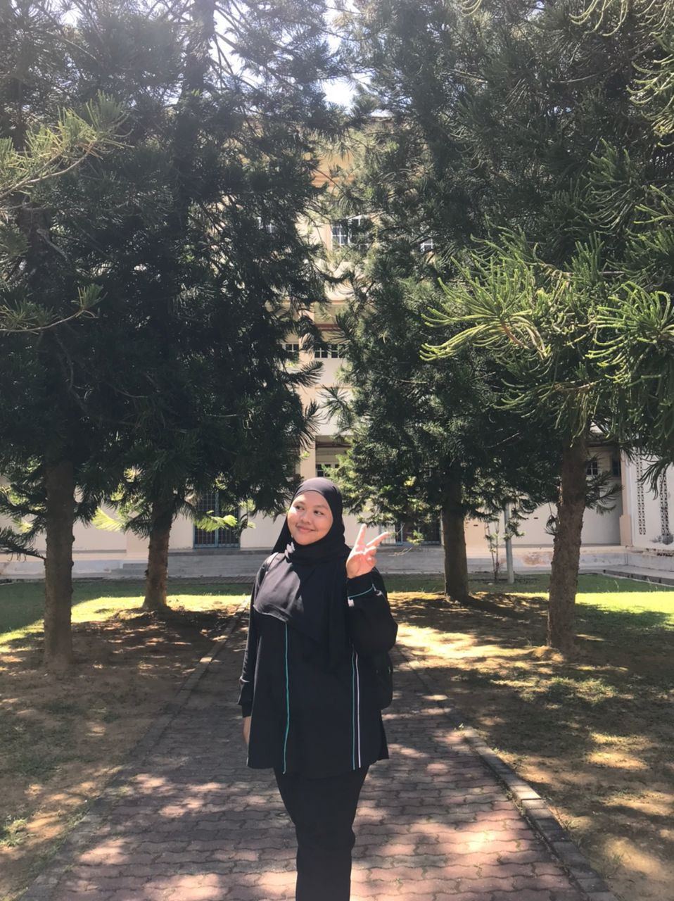
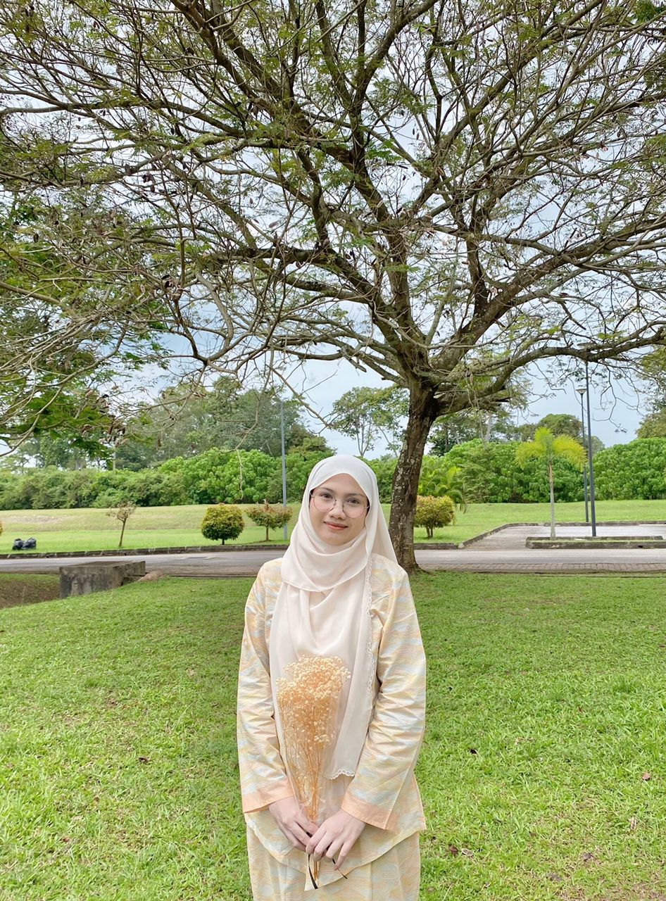

Peah was her nickname since semester 1 in our major, Diploma in Library Informatics. Peah is a quiet person when i first got to know her, but after getting close, he is an extrovert. She will not show her cheerful disposition if not with close people. Peah for me is someone who always cheers up the atmosphere among the four of us. That's a girl named Fasihah.
Ameira

This is Cira. We are in the same major and also in the same class. Cira was just casual when we first met and we quickly became extra close because she can speak the Kelantan dialect because her father is from Kelantan. Cira is an approachable and kind person. Only close people understand. Cira shared a room with Peah at Kolej Murni 2 and we often went to their room to do assignments and relax. For me, she is a person who can stand up to her friends, especially Peah. Cira is a faithful listener if we want to talk about our days. That’s our Cira.
Nasuha

This girl's name is nasuha or the three of us call her cua. That's a cute nickname but the rule is only us can call it haha. Cua is a good person but strict in things that should be done well. This is because she is the second child in the family and the eldest sister makes her an independent and tough person. Cua for me is a complement in the relationship between the four of us because she always advises us in various aspects for example for assignments and life. Of course all that gave a positive effect because that's the best for me, Cira and Peah. That girl is Nasuha.